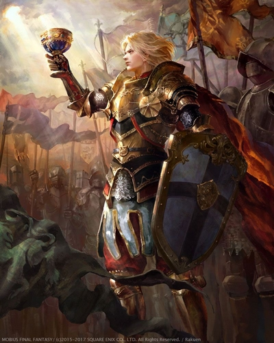
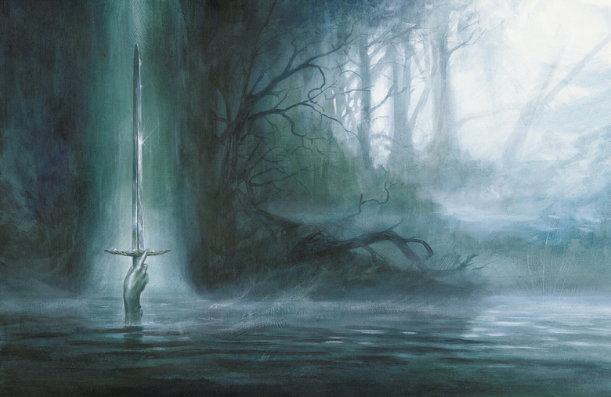
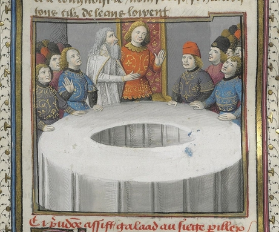
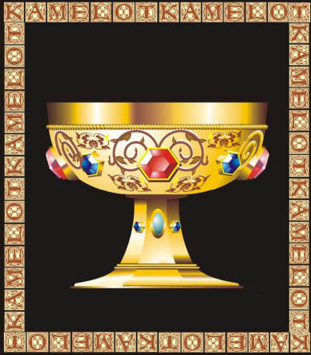

Arthur* perdit la vie au combat. Avant de sombrer dans un sommeil éternel, il lança Excalibur dans un lac, l'épée fut réceptionnée par une main sortant de la surface de l'eau. La dépouille du Roi fut portée jusqu'à une barque, menant à L'île d'Avalon, où repose les guerriers défunts.
Peu après le décès d'Arthur*, Lancelot* réapparut à Camaalot. Il aidait Guenièvre* à gouverner le Royaume de Logres*.
Un Jour, une femme voilée se présenta à lui, en lui demandant de se rendre dans un couvent, où il était attendu. Lancelot* la suivit ; aux portes du château, la femme découvrit son visage, c'était Ellan*. Lancelot*, surpris, monta sur son cheval, et galopa jusqu'au couvent.
Lancelot* fut reçu par les nonnes, qui le menèrent dans une salle, où elles se réunirent en cercle, autour de lui. Une soeur ordonna l'ouverture d'une porte. La porte s'ouvrit, devant Lancelot* ébahi, sortit un jeune homme qui lui ressemblait énormément. L'individu s'avança vers Lancelot*, et lui confia d'un air solennel : "Mon nom est Galahad. Je suis ton fils.". Lancelot* en fut troublé, Galahad était issu de l'union entre Lancelot* et Ellan*.

Lancelot* et son fils Galahad rentrèrent à Camaalot, où Merlin* les attendait. Selon une nouvelle, Merlin* serait resté captif d'une "prison d'air" créée par la fée Viviane*, pendant de longues années. L'enchanteur laissant sans réponses, les questions sur son retour ; les guida jusqu'à la Table Ronde.
Les noms des chevaliers étaient gravés sur chaque siège. Cependant, un siège ne portant aucune inscription, se distinguait des autres, il s'agissait du Siège Périlleux. "Sur ce siège, déclara Merlin*, prendra place le meilleur chevalier du monde. Tout chevalier qui s'y assoit en n'étant pas le meilleur chevalier au monde, sera aspiré en Enfer.".
Merlin* proposa à Galahad de tenter sa chance, le chevalier sans crainte, accepta, il s'assit sur le Siège Périlleux. Soudain, une bourrasque balaya la pièce. Au centre de la Table, une lumière flamboyante apparut, éblouissant les trois hommes. C'est alors que la lueur forma l'image d'un plat rond et étroit, tel un calice, se reflétant dans la pièce. "Dieu a envoyé le signe ! s'écria Merlin*, tu es l'Élu.
Galahad prit la route de la Quête du Graal ; cependant Lancelot*, qui ne pouvait pas l'accompagner, resta à Cammalot.
Merlin* se retira de Cammalot, il parcourait la lande. Depuis que Viviane*, avant de s'éteindre, l'avait libéré de sa "prison d'air", il était suivi par un étrange corbeau. Merlin* s'en méfia et suivit sont intuition ; il ramassa une pierre et d'un seul mouvement, la lança sur le rapace, avec une telle précision qu'il le décapita. Le cadavre du corbeau reprit sa véritable apparence : celle de Morgane*. La fée la plus dangereuse de tous les temps, avait succombée, au choc d'un caillou.
Galahad sur le chemin de la Quête, comme tout chevaliers, dû affronter les adversaires les plus tenaces, aider les plus faibles et terrasser les bandits. Il agissait toujours avec calme, rigueur et détermination.

Finalement, il arriva à un rivage où un bateau était amarré. Il embarqua et mit les voiles. Une tempête commença, les vagues se creusaient et devenaient de plus en plus haute. Pour la première fois de sa vie, Galahad éprouva la peur. Mais, il se ressaisit et couru jusqu'à la barre, afin de réorienter le navire. Galahad était déterminé à triompher de la tempête, lorsqu'une vague immense le frappa de plein fouet.
Lorsqu'il revint à lui, Galahad découvrit un paysage totalement blanc. Le chevalier crût qu'il avait atterri au Paradis. Un homme s'approcha de lui et l'aida à se relever : c'était Arthur*. Les deux hommes firent connaissances.
Un petit palais, immaculé, était bâtit à quelques mètres de Galahad. Lorsque le chevalier y entra, il fut reçu par de nombreux chevaliers, qui l'applaudissaient. Arthur* lui expliqua qu'il était dans l'île d'Avalon, et le conduisit jusqu'à une porte, ornée d'or.
Arthur* ne pouvait plus accompagner Galahad. Le chevalier franchit la porte dorée, et se dirigea vers une salle circulaire. Au centre de cette salle somptueuse, se trouvait une petite table, surmontée d'un récipient en argile : Le Graal. Galahad le prit dans ses mains, il trouva quelques gouttes écarlates au fond du récipient, il comprit qu'il s'agissait du Sang du Christ.
Soudain, le plafond de la pièce s'ouvrit, découvrant un ciel azur, comportant un seul nuage. Le nuage prit la forme d'une main, une main brillante de lumière, qui se précipita sur Galahad. Il ne prit pas peur, et resta à sa place, de son air calme et déterminé. Galahad s'agenouilla et ferma les yeux, puisqu'il était incommode de regarder une manifestation de Dieu en face.
Au moment où il rouvrit les yeux, le Graal ne se trouvait plus dans ses mains. Il avait accompli La Quête. Maintenant, c'était à Dieu de tenir sa promesse : mille ans de bonheur sur le monde.
Haut de Page